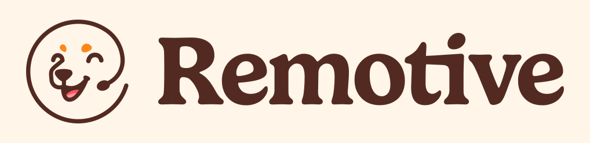

Why Remote Work Appeals to So Many People
Work no longer has to mean driving to the office every morning. Many tasks can be done digitally – and that opens up new possibilities for people who want to work more flexibly, choose where they live more freely or combine career and private life more easily.
What Is a Remote Job?
A remote job is a position where you are not permanently tied to a fixed company location. It can be fully remote work, a work-from-home model or a role where you only have to be on site occasionally.
Important: “Remote” does not automatically mean “from anywhere in the world.” Some employers only allow remote work within Germany, within the EU or in certain time zones. That is why it is worth taking a close look at each job posting.
What Are the Benefits of a Remote Job?
- You save daily travel time and commuting costs.
- You can choose where you live more flexibly.
- You gain access to employers outside your immediate area.
- Digital collaboration becomes part of your normal working day.
- Depending on the company, remote work can make travel or a longer stay somewhere else easier.
Which Remote Jobs Are Out There?
Remote work is no longer just for programmers. Many companies are looking for staff for digital roles that can easily be done outside a traditional office.
Can I Work Remotely Without an IT Degree?
Yes. What matters is not necessarily a technical degree, but whether your work can be done digitally and what requirements the employer has. Support, assistance, content, marketing, recruiting, operations and various administrative roles in particular can be interesting for applicants who are not aiming for a classic developer career.
Where Do I Find Legitimate Remote Jobs?
You can of course use LinkedIn, Indeed and traditional job boards. In addition, I would include specialized remote platforms in your search. Remote Rocketship and Remotive in particular work well as additional main sources; FlexJobs can complement your search with vetted remote and flexible positions.
For an active remote job search I would not rely on a single platform. These two sites are especially interesting because they focus strongly on remote work and can show you additional openings.
Remote Rocketship
Remote Rocketship focuses on remote positions and bundles jobs from many company sources. The filters for job title, country, experience and other criteria are especially handy.
- dedicated search for Germany
- many filters for a targeted job search
- job alerts for new openings
- interesting for many different fields
My recommendation: If you are actively looking for a remote job, I would definitely use Remote Rocketship in addition to traditional job boards.
Discover Remote Jobs →Remotive

Remotive is another specialized platform for fully remote jobs. The search can be filtered by category, location, experience level, employment type and other criteria.
- large selection of remote positions
- filters for location and career level
- jobs in marketing, support, tech, operations and more
- a good second source alongside Rocketship
My recommendation: Use Remotive alongside Rocketship. The more suitable sources you check at the same time, the better your chance of spotting an interesting opening early.
Visit Remotive →FlexJobs
FlexJobs focuses on vetted remote, work-from-home and flexible job listings. The platform is especially interesting if you want to spend less time on doubtful or unsuitable postings.
Ad · Some links in this section may be affiliate links.
Is Remote Rocketship Free?
Partly. You can first browse the platform and use a limited part of the search. Full access requires a paid membership.
If you are seriously looking for a remote job right now, I would personally use full access, because a larger selection and more search options are most useful in exactly this phase. According to the provider, paid subscriptions renew automatically until you cancel; cancellation can be done through your account or support. Remote Rocketship also currently states a 14-day money-back guarantee for individual paid memberships.
Can I Really Work From Anywhere With a Remote Job?
Sometimes yes – but not with every position. Pay special attention to wording such as “Germany Remote,” “EU Remote,” “Worldwide” or fixed time zones. Taxes, labor law, residency law and company policies can also influence where you are actually allowed to work from.
How Do I Find a Suitable Remote Job Faster?
1. Search for several job titles
The same role can be called many different things. Don’t search for just one term, but for several related job titles.
2. Use specialized remote platforms
Add sites that focus specifically on remote work to the big job boards. I would use Remote Rocketship and Remotive as two main sources; FlexJobs can complement your search further.
3. Respond to new openings quickly
Popular remote positions can receive many applications. If a role really fits, you shouldn’t wait unnecessarily for days.
4. Filter consistently
Working hours, country, language, experience level, contract type and salary should fit your actual life. More listings are not automatically better – suitable listings are.
How Do I Successfully Apply for a Remote Job?
A remote employer wants to see more than what you can do professionally. Self-organization, clear communication, digital collaboration and the ability to work independently are often important too.
- Tailor your résumé to the specific job posting.
- Show relevant digital tools and remote skills.
- Use concrete examples instead of generic phrases.
- Highlight experience that fits the advertised role exactly.
- Before submitting, check that all required documents are included.
Found a Position? Then the Smart Job Compass Comes In.
I am currently working on my own tool for remote applications. The Smart Job Compass is meant to match a specific job posting with your profile and then create an application portfolio tailored to that position.
Goal: Not sending a hundred random applications – but recognizing faster which position really fits and building your application more precisely.
How Do I Spot Scam Remote Job Offers?
- Check the employer and the official company website.
- Be careful if money is requested just so you can apply or get started.
- Never spontaneously transfer money for supposed work equipment to unknown people.
- Check the email domain, contract and contact person.
- For unusually big promises without a clear job description: look more closely.
Frequently Asked Questions About Remote Jobs
What is the difference between working from home and remote work?
Working from home often describes working from your own house. Remote work is broader and – depending on the employer – can include other places to work as well.
Which remote jobs suit career changers?
That depends on experience and the position. Support, assistance, content, social media, administrative work and certain operations roles are often interesting.
Where can I find remote jobs in Germany?
Besides traditional platforms, you can use specialized remote job boards such as Remote Rocketship. There you can search specifically for remote positions available in Germany.
Can I find a part-time remote job?
Yes. There are full-time as well as part-time, contract and project-based remote roles. Which models are available depends on the employer.
Can I work remotely for a company abroad as a German citizen?
In principle there are international remote positions, but employer, contract model, tax and residency questions and the permitted work locations all have to fit together.
Which platform should I try first?
For a broad remote job search I would use Remote Rocketship and Remotive in addition to traditional job boards. FlexJobs is another interesting addition if you are specifically looking for vetted remote and flexible positions.
Ad · Some links may be affiliate links.